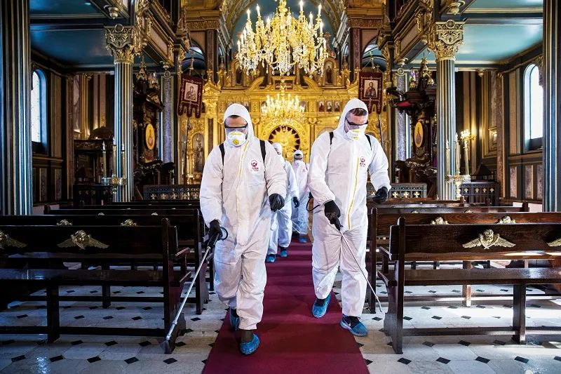
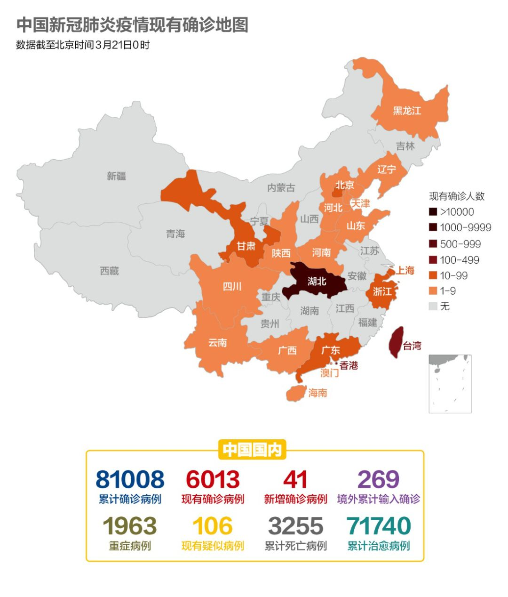
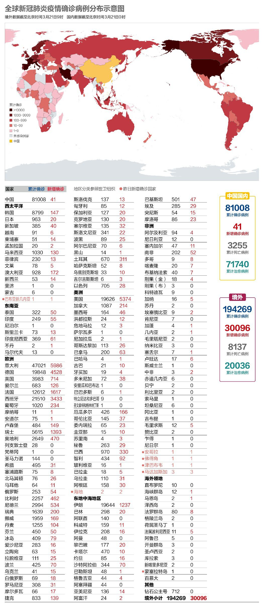
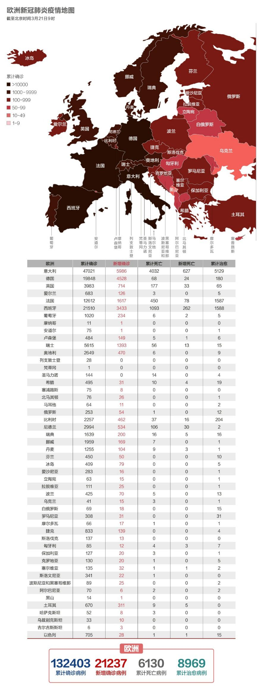
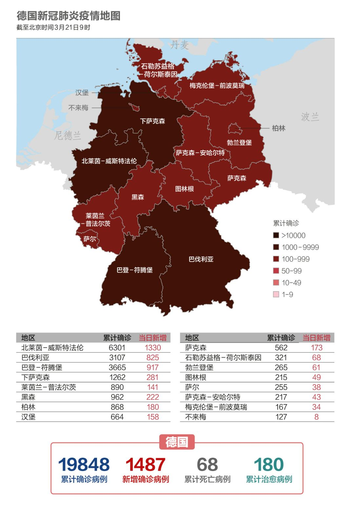

数说疫情0307：中国全力夺武汉，美国染疫州近半
原文链接 备份链接 国内31个省区市新增确诊降至两位数；全球累计确诊病例已破10万大关；意大利疫情最严重地区医疗资源已消耗殆尽 文 |《财经》数据研究员徐进 图 |《财经》视觉中心 编辑 | 郝洲 一、国内疫情防控形势继续向好，局面尽在 …

国内继续保持本地新增确诊、新增疑似病例均为零。多省领导已在公开场合摘口罩。美国新增逾5000，累计确诊近2万，美加、美墨边境即将关闭。德国病死率仅0.3%，重症比例不到10%

3月17日，在土耳其伊斯坦布尔，工作人员为一座教堂进行消杀。图/法新
文 |《财经》数据研究员 徐进
图 |《财经》视觉中心 编辑 | 郝洲
一、国内急盼复工复产，国办敦促恢复和稳定就业
图1

今日国内简述：截至3月20日24时，国内本地新增确诊、新增疑似病例均为零。新增境外输入确诊病例41例。李克强昨日考察国务院复工复产推进工作机制时强调，要想尽一切办法让中小微企业和个体户生存下来。多省领导在公开场合摘口罩，武汉快递服务全面恢复，武汉市已有40家医院恢复普通门诊。国际货币基金组织（IMF）在博客中肯定了中国政府在保证流动性、中小企业和弱势群体方面的努力。
二、海外累计确诊近20万，至少70名高官被确诊
图2

海外新增已超过3万例，累计确诊近20万。至少有22个国家的70多名政要和官员确诊感染新冠肺炎，还有多名国家领导人和官员正在接受新型冠状病毒检测。世卫组织总干事谭德塞在例行发布会上称，武汉没有新增病例为世界其他地方提供了希望和勇气。
图3

对数图，我们可以看到意大利的走势很接近湖北，恰巧它们人口也都是6000万。只是意大利病死率高于湖北。意大利以外的欧洲比起湖北以外的中国则有不小差距。欧洲整体人口少于中国，但目前病例数已大大超过中国。不仅如此，欧洲此时仍处在4日倍增的高速增长中。中国非湖北地区在武汉封城后，均果断采取了快刀斩乱麻的严厉防控措施，而欧洲各国普遍采取了观望和拖延策略。这大概是主要原因。
美国起势略缓，但近几日明显加速，平行于2日倍增线，其累计病例已经超过同时段的意大利，并将于2、3日后超过同时段的中国和欧洲。
三、特朗普暂不考虑“全国封锁”
图4

美国新增超5000例，累计确诊已经接近2万。美国总统特朗普已经通过一份声明，宣布纽约州为“重大灾区”。这是美国总统首次因公共卫生安全事件宣布重大灾区。但他认为没必要发布全美范围的“居家令”，因为一些地区疫情并不严重。
美国伊利诺伊州和康涅狄格州20日分别宣布全州居民居家隔离，要求非必要岗位的人员都待在家中不要出门。目前，包括加州和纽约州，美国已经有4个州先后发布了“居家隔离令”，影响到7500万人，接近美国人口总数的四分之一。但美国人是否会遵守隔离令需要另说。
20日起，全球范围内的美国使馆将暂停常规签证业务，包括移民及非移民类签证；但美国海外使领馆仍将提供紧急特殊情况签证服务。此外，美墨边境和美加边境都将于当地时间21日凌晨关闭。
四、英国关闭非必需公共场所，意大利派出军队加强封锁
图5

英国首相约翰逊宣布，酒吧、影剧院、俱乐部等所有非必需公共场所于20日晚关闭，但餐馆仍可提供外卖服务。财政大臣里希·苏纳克宣布，政府将根据业者申请为无班可上的雇员支付80%的薪水，同时还将推迟缴纳3月1日起连续三个月的增值税。
比利时内政部长20日下午宣布将关闭比利时边境，暂停一切“非必要”的人员流动；奥地利政府20日宣布，将现行“应急运行模式”延长到4月13日；波兰总理莫拉维茨基20日晚宣布，波兰即日起进入疫情紧急状态。波兰学校进一步停课到4月12日复活节。
图6

意大利政府20日晚发布条例，在现行疫情防控法令内容的基础上，增加对民众出行和商业活动的限制内容。条例规定，自21日至25日，禁止民众进入公园、游乐场、绿地；只能在住所附近单独进行身体锻炼；禁止在户外进行休闲娱乐活动；火车站和高速服务区内暂停销售食品；节假日期间禁止民众前往常住地址以外的度假住所。
目前意大利已启用军队实施更严格的封锁。政府现已同意利用军队加强对伦巴第地区的封锁，将有114名士兵协助维持秩序。
图7

能够被小编单拿出来说，这绝对不是个好事。不过也有个相对好一些的消息，那就是德国目前为止，病亡率依然能维持在一个较低水平。德国的病死率目前大约是0.3%，欧洲的平均病亡率是4.6%。可能的原因是，德国的病例多为年轻人和轻症病人。统计表明，意大利确诊病例平均年龄为63岁，而罗伯特-科赫研究所报告显示，德国确诊病例平均年龄只有47岁。据世卫组织公布，新冠病毒的重症比例大约在20%左右，而德国不到10%。也就是说，德国目前确诊约2万个病例，重症不到2000，大部分轻症都回家自行隔离去了，占用医疗资源的病例不多。所以，以德国的医疗基础设施来说，目前应对应该还是比较从容的。
五、伊朗已排查2250万人
图8

伊朗累计确诊也即将超过2万。中国疾病预防控制中心研究员马学军称，伊朗已经排查了2250万人，其中有150万人至少具有发热的症状，判断伊朗疫情的拐点还为时尚早。
3月20日是伊朗波斯历新年诺鲁孜节。伊朗最高领袖哈梅内伊和总统鲁哈尼分别发表电视讲话，称赞医护人员为应对新冠肺炎疫情所作的奉献，同时谴责美国对伊朗的制裁。
伊朗医学委员会主席、最高领袖的医学顾问马兰迪称，多位伊朗高官接连感染的主要原因是伊朗拥抱和亲吻脸颊的行礼方式，如果官员拒绝这种问候，会被民众认为是骄傲的人，看不起民众，认为民众是低下的人
【特别说明：以上统计，2月28日前为世卫组织官方统计数据，数据截止时间为北京时间每日17时；从2月28日开始，数据由《财经》根据公开资料统计，截止时间为北京时间每日9时】
六、全球疫情数字速览：
1、【稳岗返还补贴5.58亿元】自今年3月1日到5月31日，免征全省小规模纳税人适用3%征收率征收的增值税。目前对企业减员率不高于5.5%的，返还企业上年度实际缴纳失业保险费的70%。对500人以下的参保企业不考核减员率，直接按上年度实际缴纳失业保险费的50%予以返还。对面临暂时性生产经营困难的参保企业，延续实施困难企业稳岗返还。根据国家给予的特殊政策，各地可以结合实际扩大困难企业的返还范围。目前，全省500人以下企业已审核发放10万多家，涉及职工230多万人，发放稳岗返还补贴金额5.58亿元。
2、【互联网诊疗咨询增长20多倍】在疫情期间，互联网诊疗成为医疗服务的一个重要组成部分，国家卫生健康委的委属管医院互联网诊疗比去年同期增加了17倍。一些第三方的互联网服务平台，它们的诊疗咨询量也比同期增长了20多倍，处方量增长了近10倍。
小结：国内继续保持本地新增确诊、新增疑似病例均为零。多省领导已在公开场合摘口罩。美国新增逾5000，累计确诊近2万，美加、美墨边境即将关闭。德国病死率仅0.3%，重症比例不到10%。

▲点击图片查看更多疫情报道
责编 | 蒋丽 lijiang@caijing.com.cn
本文为《财经》杂志原创文章，未经授权不得转载或建立镜像。如需转载，请在文末留言申请并获取授权。
原文链接 备份链接 国内31个省区市新增确诊降至两位数；全球累计确诊病例已破10万大关；意大利疫情最严重地区医疗资源已消耗殆尽 文 |《财经》数据研究员徐进 图 |《财经》视觉中心 编辑 | 郝洲 一、国内疫情防控形势继续向好，局面尽在 …
原文链接 备份链接 中国国内连续2日无本地新增。全球另有6个国家感染病例过万，美国新增病例已升至全球第二。联合国称这是75年来前所未有的全球健康危机。全球约30亿人缺少肥皂和自来水等抗疫基本武器 文 |《财经》数据研究员 徐进 图 |《 …
原文链接 备份链接 今天，湖北卫健委消息，武汉市新冠肺炎确诊人数，0，新增疑似，0，现有疑似，0。 “没有什么胜利可言，挺住意味着一切。”在漫长的冬天和半个春天之后，我们终于等到了这个我们之前的人生里，从来不曾期待过的数字。 今天，武汉确 …
原文链接 备份链接 “外防输入”已是当前疫情防控重中之重。海外累计确诊病例超过10万，世卫组织呼吁各国扩大监测范围。欧洲更多国家关闭边境 文 |《财经》数据研究员 徐进 图 |《财经》视觉中心 编辑 |** 郝洲** 一、北京重启小汤山 …
原文链接 备份链接 随着新冠肺炎疫情的蔓延，在过去的一天，韩国、意大利、伊朗等多国新增确诊数继续上升，中国以外累计确诊病例超过15000例。 世卫组织：部分国家对新冠肺炎准备不足 当地时间3月5日，世卫组织在日内瓦召开新冠肺炎疫情例行发 …